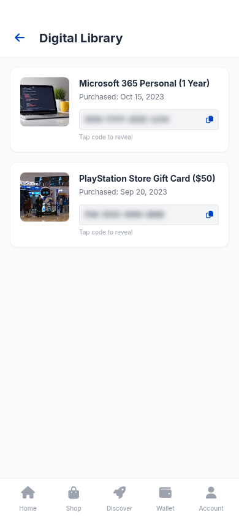
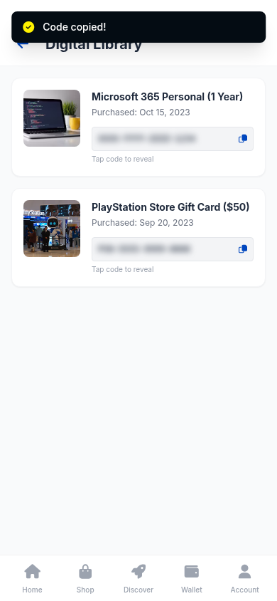

DEMO 02 / The control behind the content.
找到内容，
还要找到真正的操作入口。
数字内容库已经打开，但点击卡片本身没有触发复制。教师把注意力引向操作图标，学生据此重试并通过环境检查。
THE TASK / 用户的目标
打开数字内容库，复制一个兑换码。
View your Digital Library and copy one of the redemption codes.THE TURNING POINT
从内容区域，转向操作控件
学生反复点击卡片标题和内容区域，未触发复制，最后以 infeasible 结束。页面可见，并不等于找到了可操作控件。



关键执行截图。红圈仅标注原始点击位置，不改变截图内容。
A TEXTUAL INTERVENTION
教师给出方向，
学生负责行动。
教师原文提示点击 PlayStation 礼品卡旁的小蓝色图标，并检查 “Code copied!”。学生成功重试的实际点击位置为 (880, 410)。
教师原始指导 · 决策规则Tap the small blue icon next to the PlayStation Store Gift Card entry to reveal the redemption code.
Verify the presence of a 'Code copied!' notification at the top of the screen.
WATCH THE EVIDENCE
先看纠错，再看独立执行。
两段视频分别回答：文字指导能否帮助学生纠错，以及训练后的模型能否独立完成。
FILM 01 / TEACHER-STEERED RECOVERY
一次指导，学生重新尝试。
失败过程 → 教师原始文字指导 → 恢复同一出错前状态 → W4 学生自行重试。
FILM 02 / INDEPENDENT EXECUTION
训练之后，独立完成。
第 8 步 W4 模型，从原失败记录保存的同一初始状态出发。没有教师提示，也没有预设动作。
WHAT THIS CASE SHOWS
从“卡片在哪里”到“动作入口在哪里”
纠错把注意力从内容本身转向可操作控件。原始教师措辞与学生实际点击分别保留；成功以环境是否检测到复制动作为准。
环境检测到真实的兑换码复制动作。第 8 步 W4 模型在没有教师提示的情况下独立完成了同一任务。
关于这段展示
两项任务均参与训练。第 8 步模型的每项任务各做 3 次同初始状态、无教师指导的重复核验，均通过；重复运行不等于独立测试集。视频由真实执行截图剪辑，部分重复失败步骤明确标注省略。这些片段展示具体纠错过程，不能单独证明整体性能或泛化提升。